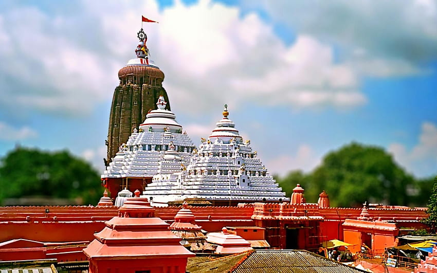
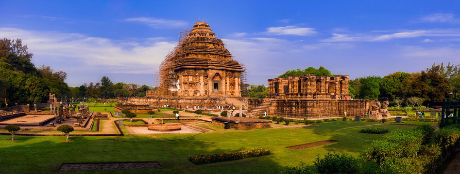
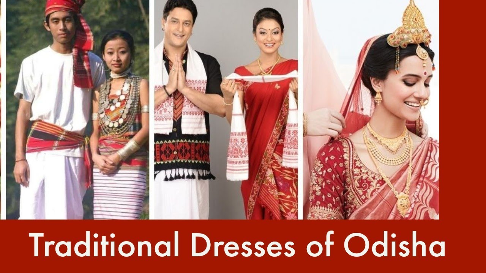
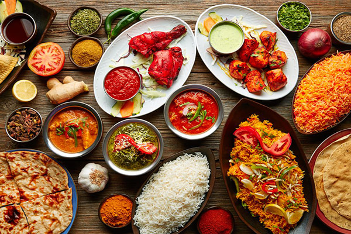
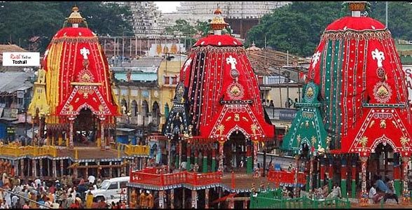

| ✧ Aspect | Information |
|---|---|
| ✧ Capital | Bhubaneswar |
| ✧ Chief minister | Naveen Patnaik |
| ✧ Largest City | Bhubaneswar |
| ✧ Districts | 30 |
| ✧ Official Language | Odia |
| ✧ Other Language | Santali, Ho, Koya, Munda, Bonda, Kishan, Gandi, Desia, Kuvi, Kui, Gabba, Soura, Juanga, Bhumija, Binjhal. |
| ✧ Population | Approximately 41 million |
| ✧ Area | 155,707 square kilometers |
| ✧ Major Rivers | Mahanadi, Brahmani, Baitarani |
| ✧ Major Industries | Steel, Mining, Tourism, Handicrafts |
| ✧ Popular Places | Puri Jagannath Temple, Konark Sun Temple, Chilika Lake, Udayagiri and Khandagiri Caves |
Traditional Dresses in Odisha includes dhoti and kurta for men, while women wear sarees like Sambalpuri Saree, Bomkai Saree, and Sonepuri Saree, along with traditional jewelry like Sankha (shell) and Pola (red bangles).
Odisha, formerly known as Orissa, is a state located in the eastern part of India with a rich historical heritage dating back to ancient times. The region has been inhabited by various indigenous tribes and has witnessed the rise and fall of several dynasties.
The history of Odisha can be traced back to the time of the Kalinga Empire, which flourished during the 4th century BCE under the rule of King Ashoka. The Kalinga War, fought by Ashoka, had a profound impact on him, leading to his conversion to Buddhism and propagation of its principles.
Over the centuries, Odisha saw the rule of various dynasties such as the Mauryas, Guptas, and Eastern Gangas. The region reached its cultural zenith during the rule of the Ganga dynasty, known for its patronage of art, architecture, and literature.
The medieval period witnessed the rise of powerful kingdoms like the Gajapatis and the Suryavamshi Gajapatis. The state also played a significant role in the maritime trade network, attracting traders from Southeast Asia and beyond.
Odisha came under the control of the British East India Company in the 18th century and subsequently became a part of British India. After independence, Odisha became a separate state in 1950. Today, it is known for its rich cultural heritage, classical dance forms like Odissi, and architectural marvels like the Sun Temple at Konark.




